In this chapter will build on our introduction to significance testing by considering tests for continuous data collected on one trait from a single population. This will also allow/require us to more fully define normal distributions, which we have already started to discuss.
Example
Let’s return to our iris data and focus on sepal lengths of I. viriginica.
`stat_bin()` using `bins = 30`. Pick better value with `binwidth`.
What if we wanted to test if the height was equal to a certain value like 7 cm?
We can’t, and it’s not.
Height is a random variable. It differs among individuals (see above), so it isn’t equal to any specific value. This may seem obvious, but it’s an important step in understanding hypothesis testing. Many students also struggle with this, but most are with the fact we learned about hypothesis testing focusing on proportions (remember the last chapter?). When we focused on binomial data, it was obvious a single draw could not be 2 things - it was a success or failure, and we focused on the relative occurrence of those.
Similarly, for continuous numeric data (remember: data that can on any value in a given range), we need to focus on describing the distribution of the data. If we do that, we might want (and be able to test) if, for example, the mean height of I. virginica is equal to 7 cm. In fact, we typically focus on the mean of the distribution (one of measures of central tendency)
To do this, we need to do what we did with binomial data: develop a null hypotheses, use it to construct a null distribution, and compare our data to it see how unusual it is (and get a p-value).
What is our null hypothesis for this example?
For this example, we are focused on a two-tailed test (we are asking if the mean is equal to a certain value), so we have
Now that we have a null hypothesis, we need to test it. We can do this by simulation. Let’s make a distribution where the \(\mu_{sepal \ length} =7 \ cm\), then draw samples from it and see how rare it is to get what we actually observed in the data…which was
Seems easy enough, but what distribution do we draw from? For our binomial data we knew exactly what to parameterize - that’s because the entire distribution that fits the null hypothesis is described by the parameter p that is set by the null hypothesis (go back to the last chapter and note we can find the spread using this one variable as well!).
If you remember the central limit theorem, you might realize the distribution of the data does not matter in some ways. No matter what it looks like, the means of the data will tend towards normality. However, we still need to describe the data itself it to simulate our draws. We’ll discuss an alternative where you sample from the data itself at the end of this chapter.
It turns out the shape of the data itself appears fairly normal. So far we’ve said normal distributions
are roughly symmetric, with tails on either side. Values near the middle of the range are more common, with the chance of getting smaller or larger values declining at an increasing rate
95% of the sample is within \~2 standard deviations of the mean (and for our mean of means, 95% of the data is within 2 standard errors)
Warning: The dot-dot notation (`..density..`) was deprecated in ggplot2 3.4.0.
ℹ Please use `after_stat(density)` instead.
`stat_bin()` using `bins = 30`. Pick better value with `binwidth`.
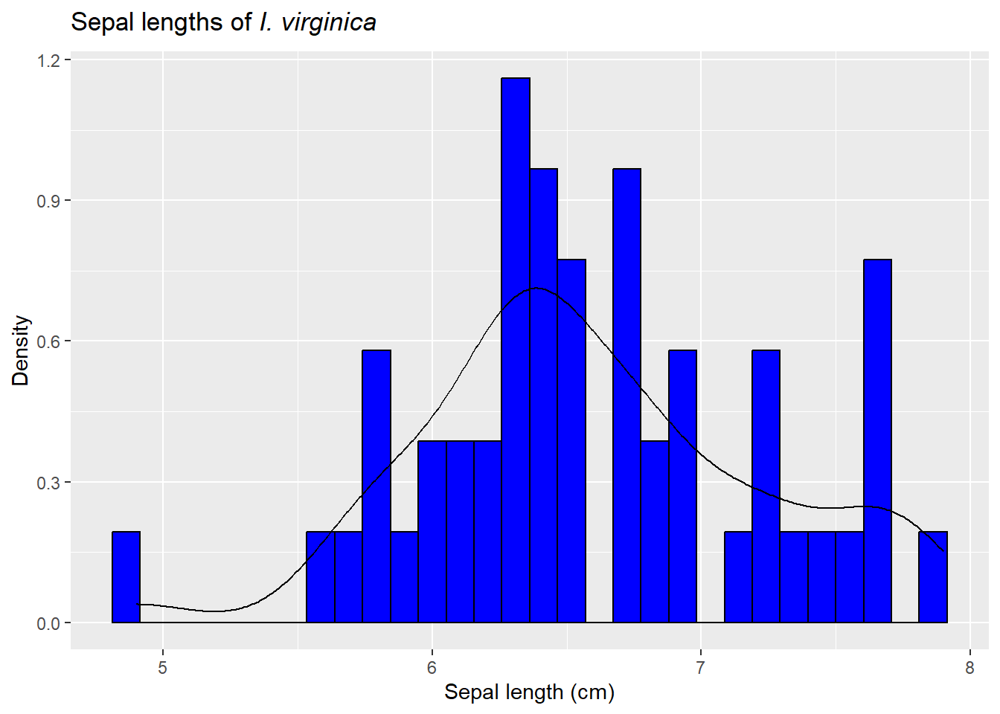
It does appear to be fairly symmetric and peaked in the middle. It turns out normal distributions (finally defined below!) are very common in nature.
Just like the binomial data, a normal distribution can be described using a formula. The formula has 2 parameters that define the shape of the distribution. \(\mu\) defines the center of the distribution, and \(\sigma^2\) describes its spread. The formula for the probabilty density function is
This looks complicated, but remember: this is just an equation for describing the likelihood of outcomes in a probability space! The first part \(\sqrt{2\pi\sigma^2}\) arises from trying to work with a curve. To understand the rest, lets take the ln of both sides
This may not look like it helps much, but we now have the formula for a straight line, \(y=mx+b\), where
\[
\begin{split}
y= \ln(f(x)) \\
b = - \frac{1}{2\sigma^2}\\
m = -\ln(\sqrt{2\pi\sigma^2})\\
x = (x-\mu)^2
\end{split}
\]
In other words, our independent variable is the squared distance from the mean (so all positive)! Note both the y-intercept (the amplitude) and slope (shape) depends on how spread out the data is (\(\sigma^2\)). Note in general when ln(y) decreases linearly with x, y decreases at a constant proportional rate with x. So we can say a normal random variate is any random variable in which the probability of an observation declines in proportion to its squared deviation from the mean (µ).
`stat_bin()` using `bins = 30`. Pick better value with `binwidth`.
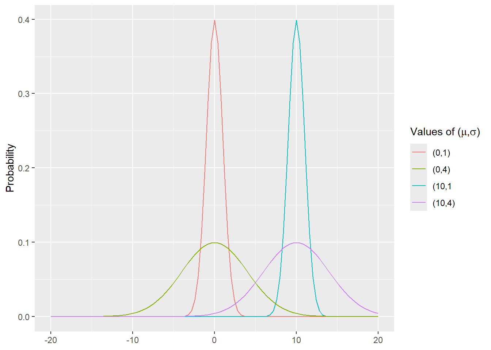
Note it fits fairly well, so we’ll use it for our sampling experiment. To do so, we’ll take 50 draws (since we had a sample size of 50) from a normal distribution, find means for each draw, then consider their distribution.
ggplot(sampling_experiment,aes(x=observed_mean)) +geom_histogram(color="black") +labs(title="Observed means from 1000 random draws",x="Mean",y="Frequency")
`stat_bin()` using `bins = 30`. Pick better value with `binwidth`.
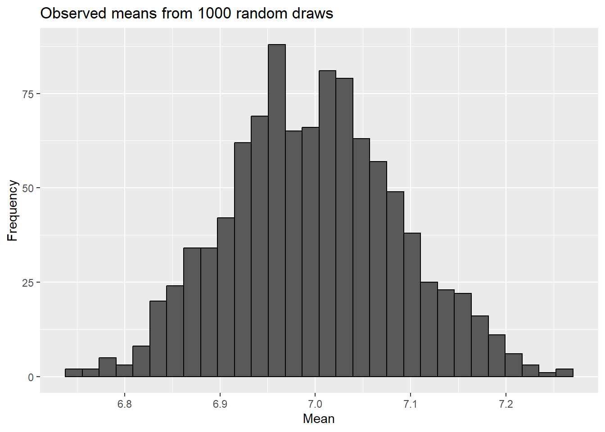
Now let’s see how that compares to what we actually saw.
sampling_experiment$compare =ifelse(abs(sampling_experiment$observed_mean-7) >=abs(mean(iris[iris$Species =="virginica","Sepal.Length"])-7), 'as or more extreme', 'not as or more extreme')sampling_experiment$compare <-factor(sampling_experiment$compare)levels(sampling_experiment$compare) <-c(levels(sampling_experiment$compare), "as or more extreme")ggplot(sampling_experiment,aes(x=observed_mean, fill=compare)) +geom_histogram(color="black") +labs(title="Observed means from 1000 random draws",x="Mean",y="Frequency", fill ="Sampled mean is ...") +scale_fill_discrete(drop =FALSE)
`stat_bin()` using `bins = 30`. Pick better value with `binwidth`.
So in our example simulation, no observed means were as far from the value from the null hypothesis as our sample mean was. This would leave to a p-value of 0 - unusual in some regards, but possible here.
Another way to compare
Just like we saw for binomial data, we can always carry out a sampling experiment to find a p-value. However, that’s mainly because we have computers. Even with computers, it would be cumbersome to set up a new sampling experiment for every dataset (which we would need to do for any change in sample size, mean, or standard deviation).
Instead it would be nice to find a way to replicate the distribution we see above for similar experiments using an equation (just like we did for the binomial data!). One step in doing this relates to how we examine our predictions given our hypotheses. It turns out, we can map our hypotheses to models that explain the variation we see in the data. Our hypotheses (remember
focus on the mean. They are also stating a prediction for every outcome! Under the null hypothesis, if we were asked to guess the length of a sepal from I. virginica, we would guess 7 cm. Under the alternative hypothesis, we would guess it’s something different than 7. Using our sample, we might instead guess it’s equal to 7 + \(\delta\), where \(\delta\) is estimated from our sample and 7+ \(\delta\) is the mean of our sample.
For each hypothesis, we could calculate a measure of related mode fit called the sum squared error from our model, or SSE, where
Here, \(Y_i\) are the data points, and \(\hat{Y_i}\) is our predicted value.
This is basically saying we compare the predicted to observed value for each data point for each model (the square exists so things don’t cancel out!). Our null hypothesis corresponds to a simpler view of the world (a reduced or null model), where \(\hat{Y_i}\) is equal to a given value (in our case, 7 cm), whereas under the alternative hypothesis (which corresponds to an alternative or full model), \(\hat{Y_i}\) is equal to a different value (such as 7 + \(\delta\)). The value for \(\delta\) is estimated from our sample and makes the full model larger than the reduced in regard to the number of parameters included in the model.
We can then compare the SSE of the 2 models by finding their difference. This is our signal from the data. If we take multiple samples from a known population that is defined by the null hypothesis, we can carry out a very similar sampling to what we did originally.
for(i in1:number_of_simulations){a <-rnorm(50, 7, sd =sd(iris[iris$Species =="virginica","Sepal.Length"]))sampling_experiment$observed_mean[i] <-mean(a)sampling_experiment$SSE_null[i] <-sum((a-7)^2)sampling_experiment$SSE_full[i] <-sum((a-mean(a))^2)}sampling_experiment$SSE_difference <- sampling_experiment$SSE_null - sampling_experiment$SSE_fullggplot(sampling_experiment,aes(x=SSE_difference)) +geom_histogram(color="black") +labs(title="Observed difference in model fit from 1000 draws",x="Mean",y="Frequency")
`stat_bin()` using `bins = 30`. Pick better value with `binwidth`.
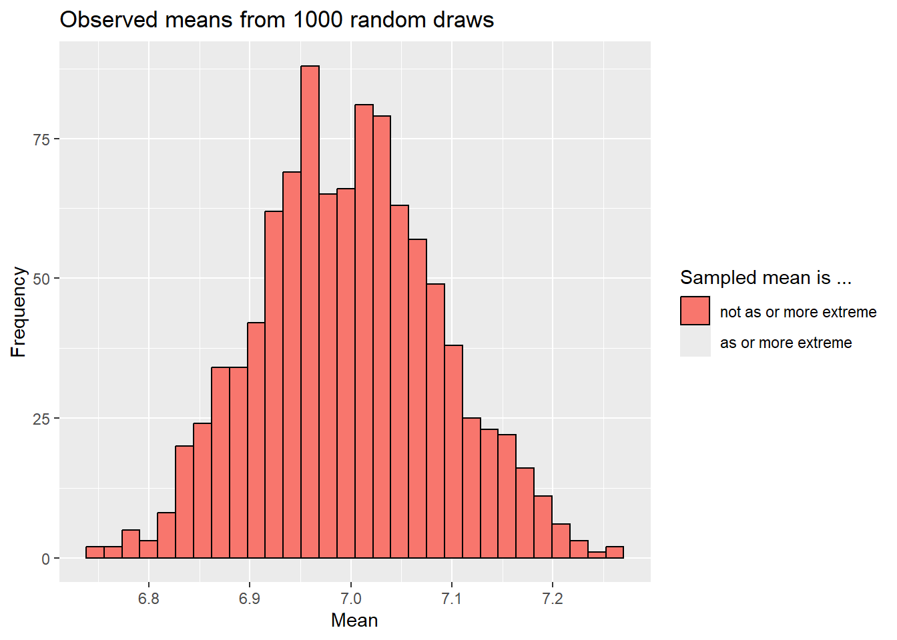
difference_SSE_observed <-sum((iris[iris$Species =="virginica","Sepal.Length"]-7)^2)-sum((iris[iris$Species =="virginica","Sepal.Length"]-mean(iris[iris$Species =="virginica","Sepal.Length"]))^2)ggplot(sampling_experiment,aes(x=SSE_difference)) +geom_histogram(color="black") +labs(title="Observed difference in model fit from 1000 draws",x="Mean",y="Frequency")+geom_vline(aes(xintercept=difference_SSE_observed))
`stat_bin()` using `bins = 30`. Pick better value with `binwidth`.
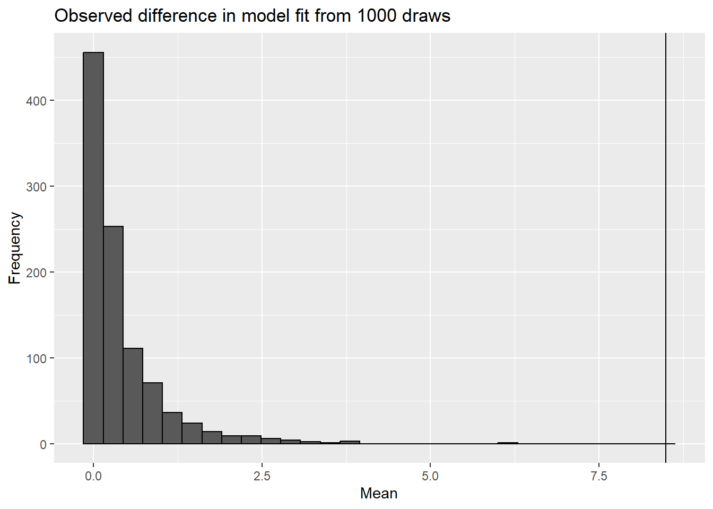
Note we never saw as large a difference in the signal our sampling experiment as we did in the data!
Note this distribution is skewed for a few reasons. Given the square term, it must positive. We also unlikely (given sampling error) that signal will be exactly zero. In fact,since we estimate \(\delta\) from the data itself, the alternative model is almost always a better fit (remember our bias in variance estimates?).
This approach accounts for the noise that we see in our data (variation we expect to see in signal values even if the null hypothesis is true) through sampling. However, if we could estimate the noise, we could also divide our signal by it. Accounting for signal and noise let’s us take very different questions in terms of data and use a standardized approach to analyze them. This is because a signal to noise ratio typically follows some distribution.
Z-test: a distribution based approach
In our case, the signal to noise ratio is approximated by the normal distribution! This is an approximate solution to the signal to noise ratio because our means approach a normal distribution as sample size increases - so for non-infinity sample sizes, they may not be perfectly normal!
We can show that our signal is simply the mean from our data minus the mean under the null hypothesis, and including \(\sigma\) in the denominator accounts for noise. We can make this more generalizable if we z-transform the data using the formula
\[
z=\frac{Y - \mu}{\sigma}
\]
After this transformation, the data is centered at 0 (think about it - if you subtract the mean from all data points…) and has a standard deviation of 1 (because you divided by the standard deviation!). This also makes the mean of transformed data equal to \(\delta\) and the mean under the null hypothesis equal to zero. This also means ~68% of the data points lie between -1 and 1, while ~95% lie between -2 and 2 (since the standard deviation is 1!).
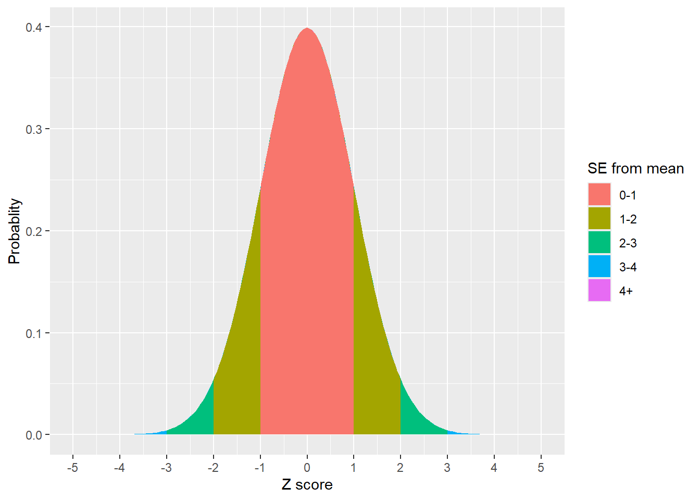
Figure 1: ~65% of the data lies with 1 standard deviation of the mean, ~95% lies within 2 standard deviations, and ~99% lies within 3 standard deviations of the mean
We call this specific form of the normal distribution (N(0,1), showing the mean and standard deviation parameters) the Z distribution. Extending on this with some algebra, we can get a Z-score from any data using the equation
\[
z=\frac{\bar{x} - \mu}{\sigma}
\]
This transforms a given data point into a z-score on the z, or standard normal, distribution. We can then use the Z distribution to consider how unusual our z-scores are (i.e., get a p-value!). We call the approach that uses this distribution the z-test, and it can be carried out using the z.test function in the BDSA package.
library(BSDA)z.test(iris[iris$Species =="virginica","Sepal.Length"], mu =7, sigma.x=sd(iris[iris$Species =="virginica","Sepal.Length"]))
One-sample z-Test
data: iris[iris$Species == "virginica", "Sepal.Length"]
z = -4.5815, p-value = 4.617e-06
alternative hypothesis: true mean is not equal to 7
95 percent confidence interval:
6.411746 6.764254
sample estimates:
mean of x
6.588
Using this approach we get a p-value of .000005 - not 0, but very close!
A little history
Although software now provides us exact (approximate) p-values, historically this was far more difficult. For this reason, people took advantage of a transformation so they could use a standardized table like this one.
Example of z-table. Jsmura, Creative Commons Attribution-Share Alike 4.0 International licence
These tables showed how Z-scores related to p-values. Note these often showed the area to the left of the value, so two-tailed tests required one to multiple the given p-value by 2 (or, if focused on the upper tail, multiply (1-given p-value) by 2 since the distribution is symmetric. Similarly, some tables only had values <0; for those you could find the score whose absolute value corresponed to the observed z-score and multiply the noted p-value by 2 for two-tailed tests .
For our example, we got a z score of -4.8515. The table doesn’t even go that low!
Does the distribution of the data matter?
Remember we are focusing on the distribution of the means (both our sampling experiment and SSE calculations include the means of the sample and data under the null hyothesis!). Given that and the central limit theorem, does the distribution of the data matter? Yes, but only in regards to the relationship between sample size and normality of the sample means. If the underlying data is normal, then the sampled means are distributed normally for almost any sample size, although sample size impacts the spread of the sample means.
No id variables; using all as measure variables
`stat_bin()` using `bins = 30`. Pick better value with `binwidth`.
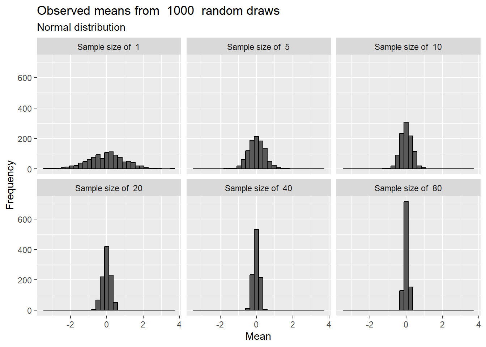
Figure 2: Means drawn from a normal distribution are normal regardless of sample size
For other distributions, larger sample sizes are required to approximate normality. For example, consider a highly-peaked (double-exponential) distribution
No id variables; using all as measure variables
`stat_bin()` using `bins = 30`. Pick better value with `binwidth`.
or as skewed \(\chi^2\) distribution (here with a df =4, to be explained later!):
No id variables; using all as measure variables
`stat_bin()` using `bins = 30`. Pick better value with `binwidth`.
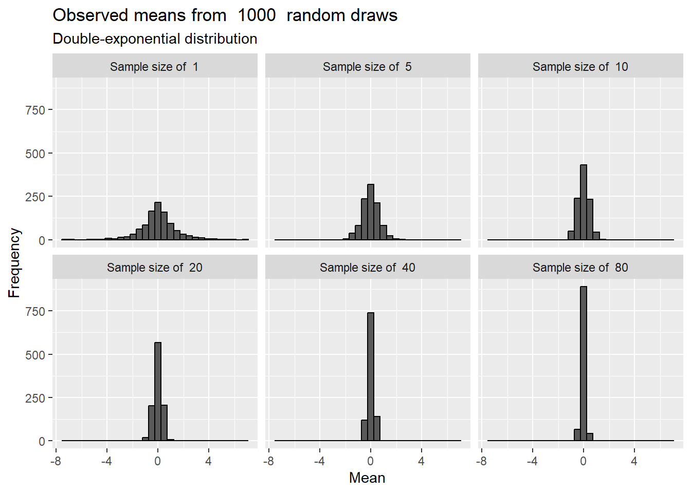
Even for these very non-normal distributions, the means approach a normal distribution at fairly low sample sizes. This is even true for binomial data, especially when p is not very close to 0 or 1. Consider
No id variables; using all as measure variables
`stat_bin()` using `bins = 30`. Pick better value with `binwidth`.
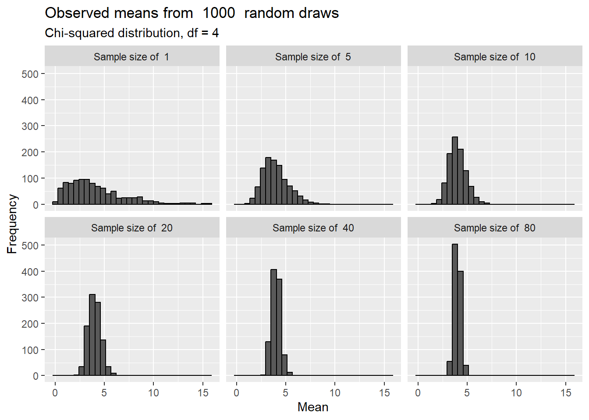
This is why it used to be more common to use a normal approximation to the binomial distribution - even though the binomial distribution is easy to compute,the z is even easier! For example, Sandidge (Sandidge 2003) noted that brown recluse spiders chose dead prey items (as opposed to live - 2 categories!) when offered choices. This data could be assessed using a binomial test
binom.test(119,(59+41+41), p=.5)
Exact binomial test
data: 119 and (59 + 41 + 41)
number of successes = 119, number of trials = 141, p-value < 2.2e-16
alternative hypothesis: true probability of success is not equal to 0.5
95 percent confidence interval:
0.7733542 0.8995595
sample estimates:
probability of success
0.8439716
or a \(\chi^2\) test, which is similar to a z test but focuses on a sum of independent squared Z variates. The \(\chi^2\) distribution is defined by a degrees of freedom, or df, parameter, which in this case isequal to the number of categories -1 (or 2-1=1 in this case). We will return to df multiple times! Note the p-values obtained from the Z and \(\chi^2\) tests are the same!
chisq.test(c(119,n-119))
Chi-squared test for given probabilities
data: c(119, n - 119)
X-squared = 66.73, df = 1, p-value = 3.113e-16
This may seem esoteric, but understanding these issues may help you interpret older papers while also choosing to employ more modern statistical methods.
QQ norm plots - commonly used, but not needed, at this point!
In addition to considering the sample size and underlying distribution, quantile-quantile (Q-Q) plots are sometimes used to assess normality. These plots plot quantiles in one data set against quantiles from another to determine if they come from similar distribution. Remember, quantiles just order data; percentiles are example where you have 100 cut points. Q-Q norm plots consider if a given dataset are similar to a normal distribution. If so, then the dots should match the straight line produced by the qqline function.
While we introduce Q-Q plots here, and they are often used to assess normality, remember our tests (so far) are relying on the means of the data being normally-distributed and not the data itself!
What if we don’t know the variance?
Assuming everything above makes sense, we are left with one issue: the variance of the underlying population is rarely known!
In the above examples, we actually used our estimate of variance from the sample to run our simulation experiment and z-test! While this works ok for large sample sizes (yay for central limit theorem!) and is what statisticians relied upon historically, it doesn’t work for well for smaller sample sizes (unless we somehow know the population variance). Our estimates for the population variance are less precise and potentially biased at small sample sizes.
To address this issue, statisticians developed the t-distribution. Unlike the normal distribution, its shape depends on the sample size. This parameter is coded as degrees of freedom, commonly denoted as df, and is equal to n - 1 (we’ll come back to df later!). The major breakthrough, however, was that df was the only sample-specific parameter. The same distribution works regardless of the estimated population variance, as a t statistic/score is created that functions like a z score.
\[
t=\frac{\bar{x} - \mu}{\frac{s}{\sqrt{n}}}
\]
It can be shown (though not here!) that the t-distribution is actually a specific form of the F distribution (which we’ll see in ANOVAs). An F-distribution is the ration of two \(\chi^2\) distributions, which (as noted above) are sums of squared Z distributions. The t distribution is the special case where you can take the square of an F distribution where the numerator (top) \(\chi^2\) distribution has 1 degree of freedom and the denomintor (bottom) has n-1 degrees of freedom. In general, variance follows a \(\chi^2\) distribution with n-1 degrees of freedom.
Because it directly uses the estimate of the population variance, smaller sample sizes show more spread (and thus make null hypotheses more difficult to reject!). For example, note how small sample sizes (remember, df=3 means n=4!) are notably different from the normal distribution, while larger sample sizes become very hard to distinguish!
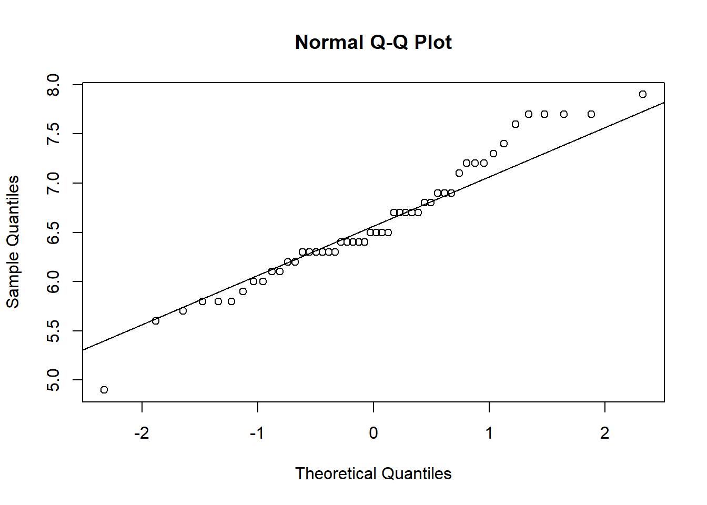
Note this means the t-distribution is actually a class of distributions.
In older text books, you would have a t-table that showed t scores corresponding to commonly used values of \(\alpha\) for multiple degrees of freedom. These published t scores are sometimes called critical values. Users would have compared their calculated t-score (or its absolute value in the case of negative values) to the appropriate critical values (often \(\alpha/2\) for 2-sided tests) to determine if a finding was significant. We can actually produce a t table in R.
To calculate the test statistic in R, we can instead (thankfully!) use the t.test function.
t.test(iris[iris$Species =="virginica","Sepal.Length"], mu =7)
One Sample t-test
data: iris[iris$Species == "virginica", "Sepal.Length"]
t = -4.5815, df = 49, p-value = 3.195e-05
alternative hypothesis: true mean is not equal to 7
95 percent confidence interval:
6.407285 6.768715
sample estimates:
mean of x
6.588
Note the t-test also provides confidence intervals. Note these consider the spread of the data given the t-distribution so they are always wider than those predicted using a normal distribution, though the difference is small at large sample sizes.
This explains why I have noted ~95% of the data lies within 2 standard errors of the mean! For truly normal data, it’s actually within 1.96 standard errors. For data where we estimate the population variance, it depend on the sample size, but even at n=21 (and thus df = 20!) the number is 2.09. Note
t_critical <-setNames(data.frame(matrix(ncol =2, nrow =length(sample_size))), c("n", "95% of the data is within this many standard deviations of the mean"))for (i in1:length(sample_size)){t_critical$n[i] <- sample_size[i]t_critical[i,2] <-qt(.025,as.numeric(sample_size[i]))}
What if we don’t trust the normal approximation?
Despite the central limit theorem (or because of it), we may not think our sample size is sufficient given the distribution the data to assume that \(\hat{Y}\) really follows a normal distribution. In that case we a few options.
Wilcoxon test (aka, signed binary-transform, Fisher’s sign test)
If the distribution of the data is symmetric, a Wilcoxon test may be appropriate. Note it is rare to have data that are symmetrically distributed but that for which you don’t think th means will be normally distributed). We introduce the test here as it will come back up (and be more useful) in later chapters.
This test employs a strategy we will see again and again: it ranks the data, in this case based on the distance from the mean under the null hypothesis. A sign is also assigned to each rank, with those originating from data points that were lower than the proposed mean becoming negative. In theory, the sum of the signed ranks should be ~0 if HO is true. We can carry out this test in R using the wilcox.test function.
wilcox.test(iris[iris$Species =="virginica","Sepal.Length"], mu =7)
Wilcoxon signed rank test with continuity correction
data: iris[iris$Species == "virginica", "Sepal.Length"]
V = 241.5, p-value = 0.0001312
alternative hypothesis: true location is not equal to 7
Sign test (aka the median test)
If the data are not symmetrically distributed, the sign test actually just counts those below the proposed value (which is the median here instead of the mean, since we are concerned about normality). In theory, approximately half the values should be under the proposed mean if HO is true. The proportion below is compared to .5 using a binomial test.
One-sample Sign-Test
data: iris[iris$Species == "virginica", "Sepal.Length"]
s = 12, p-value = 0.0003059
alternative hypothesis: true median is not equal to 7
95 percent confidence interval:
6.3 6.7
sample estimates:
median of x
6.5
Achieved and Interpolated Confidence Intervals:
Conf.Level L.E.pt U.E.pt
Lower Achieved CI 0.9351 6.3 6.7
Interpolated CI 0.9500 6.3 6.7
Upper Achieved CI 0.9672 6.3 6.7
Bootstrapping
The final option we will review is a little different. For all our other hypothesis tests we’ve been resampling from a distribution that fits the parameters from the null hypothesis. However, its turns out we can resample from the actual data we collected to approximate the distribution of the sample (or the signal in most cases). You can then use that distribution to develop confidence intervals or hypothesis testing. The only requirement here is we have a large enough sample size to actually appropriately sample from (and that we have the means to do it!). This approach was developed in the 1990s given the increase in computing power and availability.
We can demonstrate this with an imaginary population (and also demonstrate the central limit theorem). Let’s make a population whose trait value of focus falls between 60 and 80 in a uniform manner.
When we plot them we see it looks very much like the distribution of means we obtained by re-sampling!
ggplot(bootstrap_outcomes, aes(x=mean)) +geom_histogram(color="black") +labs(title="Bootstrapped means of size 50 from our imaginary population",x="Trait value",y="Frequency")
`stat_bin()` using `bins = 30`. Pick better value with `binwidth`.
Overall, this means we can use our sample to recreate our underlying distribution and explore its properties!
Let’s demonstrate this approach with our iris data. First, we can make “new” datasets from our original data by sampling (with replacement) samples of the same size from our original dataset.
bootstrap_data<- iris[iris$Species =="virginica","Sepal.Length"]bootstrap_outcomes <-data.frame(mean =rep(NA, number_of_simulations), sd =NA)for (i in1:number_of_simulations){iris_bootstrap <-sample(bootstrap_data, length(bootstrap_data), replace = T)bootstrap_outcomes$mean[i] <-mean(iris_bootstrap)bootstrap_outcomes$sd[i] <-sd(iris_bootstrap)}ggplot(bootstrap_outcomes, aes(x=mean)) +geom_histogram(color="black") +labs(title=expression(paste("Bootstrapped means of sepal lengths of ",italic("I. virginica"))),x="Mean sepal length (cm)",y="Frequency")
`stat_bin()` using `bins = 30`. Pick better value with `binwidth`.
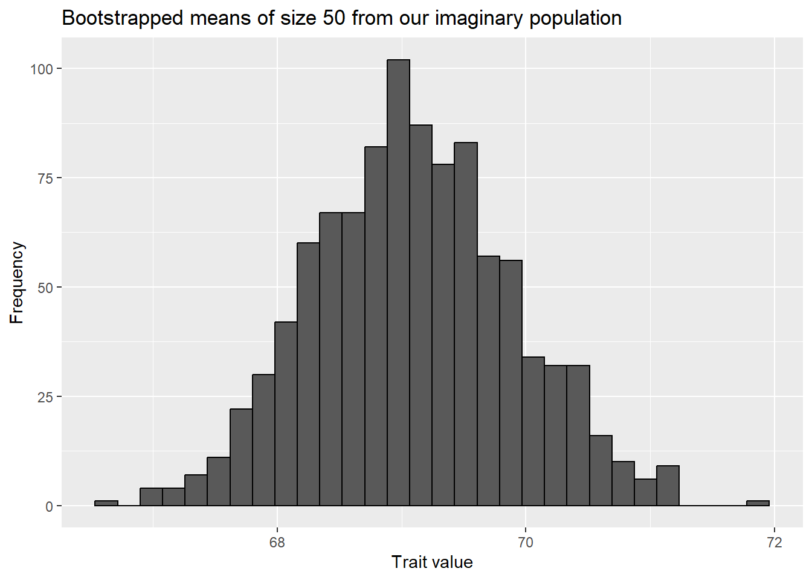
We again (thanks to the central limit theorem) see the means follow a normal distribution.
We can also carry this out using the boot function (in the boot package), though the functions may look a little odd.
library(boot)results <-boot(data=bootstrap_data, statistic =function(x, inds) mean(x[inds]),R=number_of_simulations)ggplot(data.frame(results$t), aes(x=results.t)) +geom_histogram(color="black") +labs(title=expression(paste("Bootstrapped means of sepal lengths of ",italic("I. virginica"))),x="Mean sepal length (cm)",y="Frequency")
`stat_bin()` using `bins = 30`. Pick better value with `binwidth`.
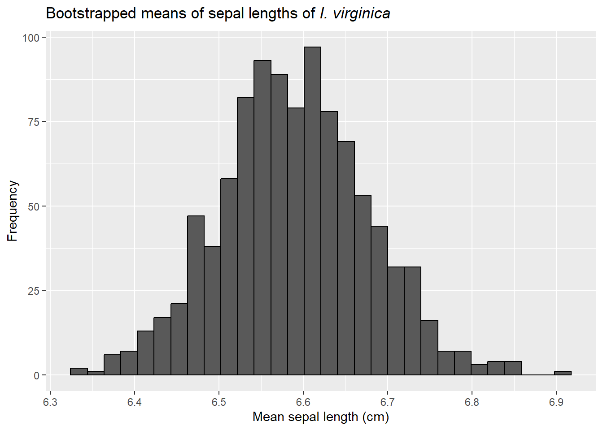
and then find the 95% confidence interval. Like binomial data, there are a few ways to do this. One is to use the percentile, or quantile, method. This is intuitive. We rank the bootstrapped values from smallest to largest and then find points that cut off the bottom and top 2.5%.
quantile( results$t, probs=c(.025, .975) )
2.5% 97.5%
6.4219 6.7781
Though simple, these findings may also be biased. More advanced intervals are provided the boot.ci function.
boot.ci(results)
Warning in boot.ci(results): bootstrap variances needed for studentized
intervals
BOOTSTRAP CONFIDENCE INTERVAL CALCULATIONS
Based on 1000 bootstrap replicates
CALL :
boot.ci(boot.out = results)
Intervals :
Level Normal Basic
95% ( 6.410, 6.761 ) ( 6.394, 6.758 )
Level Percentile BCa
95% ( 6.418, 6.782 ) ( 6.416, 6.778 )
Calculations and Intervals on Original Scale
The boot.t.test function in the MKinfer package offers another way to calculate bootstrap statistics for single-sample continuous data. It returns the percentile confidence intervals and also offers a p value.
library(MKinfer)boot.t.test(iris[iris$Species =="virginica","Sepal.Length"], mu =7)
Bootstrap One Sample t-test
data: iris[iris$Species == "virginica", "Sepal.Length"]
bootstrap p-value < 2.2e-16
bootstrap mean of x (SE) = 6.589584 (0.08854959)
95 percent bootstrap percentile confidence interval:
6.418 6.764
Results without bootstrap:
t = -4.5815, df = 49, p-value = 3.195e-05
alternative hypothesis: true mean is not equal to 7
95 percent confidence interval:
6.407285 6.768715
sample estimates:
mean of x
6.588
Next steps
Now that we’ve covered dealing with categorical and continuous data, we will move to comparing populations to each other.